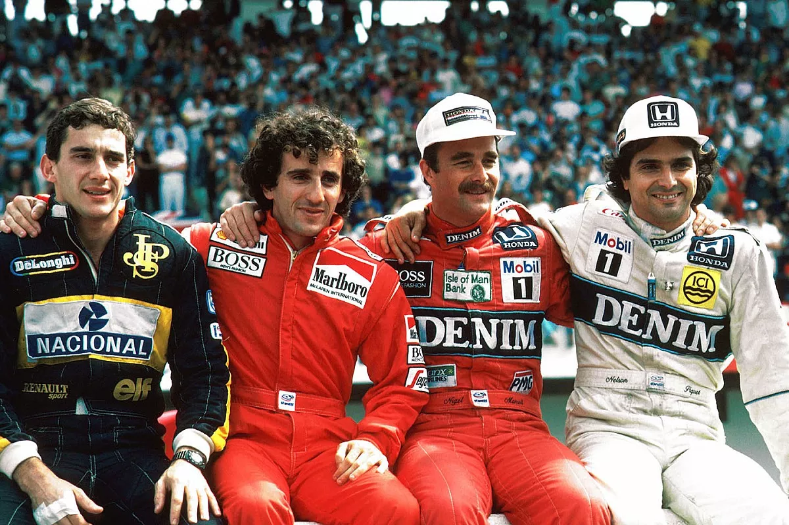
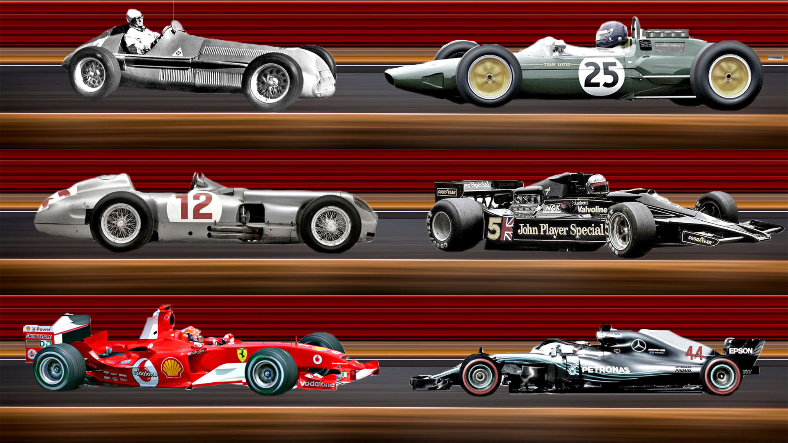

¿Qué es la F1?
Descubre el mundo de la Fórmula 1
Historia breve de la Fórmula 1
La Fórmula 1, la máxima categoría del automovilismo, nació en 1950. Desde entonces, ha sido escenario de numerosas batallas legendarias entre pilotos, equipos y constructores. Con su evolución tecnológica y su incesante búsqueda de velocidad, la F1 ha cautivado al mundo durante más de 70 años. La Fórmula 1 ha transformado el mundo del deporte motor con avances tecnológicos en los autos, como los motores híbridos actuales. Las escuderías más históricas, como Ferrari, McLaren y Mercedes, han sido protagonistas, y pilotos legendarios como Ayrton Senna, Alain Prost y Michael Schumacher han dejado su huella. Hoy, la F1 sigue siendo un espectáculo de velocidad, estrategia y muchísima emoción.
¿Cómo funciona el campeonato de F1?
El campeonato de Fórmula 1 se organiza anualmente y consta de una serie de carreras (GP) que se llevan a cabo en circuitos de todo el mundo. Los pilotos luchan por ganar puntos en cada carrera, y el que acumula más puntos al final de la temporada se corona como campeón del mundo de pilotos. Además, las escuderías compiten en el Campeonato de Constructores, sumando puntos según el rendimiento de sus autos. Los puntos se otorgan a los primeros diez pilotos de cada carrera: 25 para el primero, 18 para el segundo, y así sucesivamente hasta el décimo puesto.

